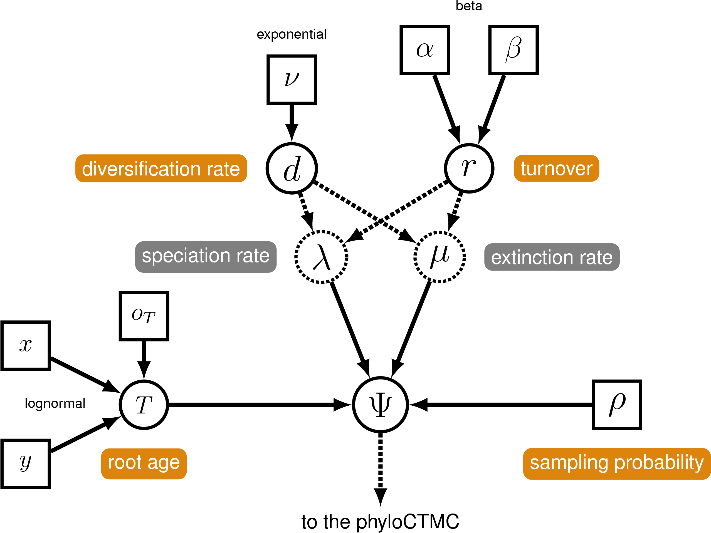

Central among the questions explored in biology are those that seek to understand the timing and rates of evolutionary processes. Accurate estimates of species divergence times are vital to understanding historical biogeography, estimating diversification rates, and identifying the causes of variation in rates of molecular evolution.
This tutorial will provide a general overview of divergence time estimation using fossil calibration and relaxed-clock model comparison in a Bayesian framework. The exercise will guide you through the steps necessary for estimating phylogenetic relationships and dating species divergences using the program RevBayes (Höhna et al. 2014; Höhna et al. 2016).
The various exercises in this tutorial take you through the steps required to perform phylogenetic analyses of the example datasets. In addition, we have provided the output files for every exercise so you can verify your results. (Note that since the MCMC runs you perform will start from different random seeds, the output files resulting from your analyses will not be identical to the ones we provide you.)
Download the data files listed above.
The alignment in file, data/bears_irbp.nex, contains interphotoreceptor
retinoid-binding protein (irbp) sequences for each extant species.
In this exercise, we will compare among different relaxed clock models and estimate a posterior distribution of calibrated time trees. The dataset we will use is an alignment of 10 caniform sequences, comprising 8 bears, 1 spotted seal, and 1 gray wolf. Additionally, we will use the occurrence time of the caniform fossil Hesperocyon gregarius to inform our prior on the root age of the tree (i.e., the most-recent-common ancestor of caniforms).
This tutorial sets up three different relaxed clock models and a
calibrated birth-death model. Because of the complexity of the various
models, this exercise is best performed by specifying the models and
samplers in different Rev files. At the beginning of each section, you
will be given a suggested name for each component file; these names
correspond to the provided Rev scripts that reproduce these commands.
Directory Structure
This tutorial assumes that you have a very specific directory structure when running RevBayes. First, you may want to put the RevBayes binary in your path if you’re using a Unix-based operating system. Alternatively, you can place the binary in a directory from which you will execute RevBayes, e.g., the tutorial directory. The tutorial directory can be any directory on your file system, but you may want to create a new one so that you avoid conflicts with other RevBayes tutorials.
Create a directory for this tutorial called RB_ClockModels_Tutorial (or any name you like), and navigate to that directory. This is the tutorial directory mentioned above.
For this exercise, the Rev code provided assumes that within the
tutorial directory exists subdirectories. These directories must have
the same names given here, unless you wish to also change the Rev code
to conform to your specific directory names.
The first subdirectory will contain the data files (downloaded in the Getting Started section).
Create a directory called data in your tutorial directory.
Save the tree and alignment files downloaded above (Getting Started) in the
datadirectory.
The second subdirectory will contain the Rev files you write to
execute the exercises in this tutorial.
Create a directory called scripts in your tutorial directory.
This tutorial will guide you through creating all of the files necessary
to execute the analyses without typing the Rev language syntax
directly in the RevBayes console. Since the scripts must point to
model and analysis files in a modular way, it is important to be aware
of you directory structure and if you choose to do something different,
make sure that the file paths given throughout the tutorial are correct.
Finally, we’ll need a directory for all of the files written by our analyses. For some operations, RevBayes can create this directory on the fly for you. However, it may be safer just to add it now.
Create a directory called output in your tutorial directory.
The only files you need for this exercise are now in the data
directory. Otherwise, you will create all of the Rev files specifying
the models and analyses.
The birth-death process we will use is a constant-rate process conditioned on the age of the root of the tree ().

Create the Rev File
Open your text editor and create the birth-death model file called m_BDP_bears.Rev in the
scriptsdirectory.Enter the
Revcode provided in this section in the new model file.
Read in a Tree from a Previous Study
Sometimes it is convienent to read in a tree from a previous study. This can be used as a starting tree or if there are nodes in the tree from the previous study that we wish to compare our estimates to. We will read in the tree estimated by (dos Reis et al. 2012).
T <- readTrees("data/bears_dosReis.tre")[1]
From the tree we can initialize some useful variables. (These can also be created from the data matrix using the same methods.)
n_taxa <- T.ntips()
taxa <- T.taxa()
Finally, we initialize a variable for our vector of moves and monitors.
moves = VectorMoves()
monitors = VectorMonitors()
We will begin by setting up the model parameters and proposal mechanisms of the birth-death model. We will use the parameterization of the birth-death process specifying the diversification and turnover. For a more detailed tutorial on the simple birth-death model, please refer to the Simple Diversification Rate Estimation tutorial.
Diversification
Diversification ($d$) is the speciation rate ($\lambda$) minus the extinction rate ($\mu$): $d = \lambda - \mu$.
diversification ~ dnExponential(10.0)
moves.append( mvScale(diversification, lambda=1.0, tune=true, weight=3.0)
Turnover
Turnover is: $r = \mu / \lambda$.
turnover ~ dnBeta(2.0, 2.0)
moves.append( mvSlide(turnover,delta=1.0,tune=true,weight=3.0)
Deterministic Nodes for Birth and Death Rates
The birth rate and death rate are deterministic functions of the diversification and turnover. First, create a deterministic node for $1 - r$, which is the denominator for each formula.
denom := abs(1.0 - turnover)
Now, the rates will both be positive real numbers that are variable transformations of the stochastic variables.
birth_rate := diversification / denom
death_rate := (turnover * diversification) / denom
Sampling Probability
Fix the probability of sampling to a known value. Since there are approximately 147 described caniform species, we will create a constant node for this parameter that is equal to 10/147.
rho <- 0.068
The fossil Hesperocyon gregarius is a fossil descendant of the most-recent common ancestor of all caniformes and has an occurrence time of $\sim$38 Mya. Thus, we can assume that the probability of the root age being younger than 38 Mya is equal to 0, using this value to offset a prior distribution on the root-age.
First specify the occurrence-time of the fossil.
tHesperocyon <- 38.0
We will assume a lognormal prior on the root age that is offset by the
observed age of Hesperocyon gregarius. We can use the previous
analysis by (dos Reis et al. 2012) to parameterize the lognormal prior on the root
time. The age for the MRCA of the caniformes reported in their study was
$\sim$49 Mya. Therefore, we can specify the mean of our lognormal
distribution to equal $49 - 38 = 11$ Mya. Given the expected value of
the lognormal (mean_ra) and a standard deviation (stdv_ra), we can
also compute the location parameter of the lognormal (mu_ra).
mean_ra <- 11.0
stdv_ra <- 0.25
mu_ra <- ln(mean_ra) - ((stdv_ra*stdv_ra) * 0.5)
With these parameters we can instantiate the root age stochastic node with the offset value.
root_time ~ dnLognormal(mu_ra, stdv_ra, offset=tHesperocyon)
Now that we have specified all of the parameters of the birth-death process, we can create our stochastic node representing the tree topology and divergence times.
timetree ~ dnBDP(lambda=birth_rate, mu=death_rate, rho=rho, rootAge=root_time, samplingStrategy="uniform", condition="nTaxa", taxa=taxa)
We may be interested in a particular node in the tree and thus wish to
save the age of that node to a log file. To do this, we can create a
deterministic node for that node age. First, define the node by a set of
taxa using the clade() function. This will not restrict this node to
be monophyletic, but just create a node that is the MRCA of the taxa
listed (even if that node has descendants that are not named).
clade_Ursidae <- clade("Ailuropoda_melanoleuca","Tremarctos_ornatus","Helarctos_malayanus", "Ursus_americanus","Ursus_thibetanus","Ursus_arctos","Ursus_maritimus","Melursus_ursinus")
Once we have defined the node, we can create a deterministic node to monitor its age.
tmrca_Ursidae := tmrca(timetree,clade_Ursidae)
Next, create the vector of moves. These tree moves act on node ages:
moves.append( mvNodeTimeSlideUniform(timetree, weight=30.0) )
moves.append( mvSlide(root_time, delta=2.0, tune=true, weight=10.0) )
moves.append( mvScale(root_time, lambda=2.0, tune=true, weight=10.0) )
moves.append( mvTreeScale(tree=timetree, rootAge=root_time, delta=1.0, tune=true, weight=3.0) )
Then, we will add moves that will propose changes to the tree topology.
moves.append( mvNNI(timetree, weight=8.0) )
moves.append( mvNarrow(timetree, weight=8.0) )
moves.append( mvFNPR(timetree, weight=8.0) )
Now save and close the file. This file, with all the model
specifications will be loaded by other Rev files.
The next sections will walk you through setting up the files specifying
different relaxed clock models. Each section will require you to create
a separate Rev file for each relaxed clock model, as well as for each
marginal-likelihood analysis.
The global molecular clock assumes that the rate of substitution is constant over the tree and over time .
Create the Rev File
Open your text editor and create the global molecular clock model file
called in the scripts directory.
Enter the Rev code provided in this section in the new model file.
Keep in mind that we are creating modular model files that can be
sourced by different analysis files. Thus, the Rev code below will
still depend on variable initialized in different files.
The Clock-Rate
The clock-rate parameter is a stochastic node from a gamma distribution.
clock_rate ~ dnGamma(2.0,4.0)
moves.append( mvScale(clock_rate,lambda=0.5,tune=true,weight=5.0)
The Sequence Model and Phylogenetic CTMC
Specify the parameters of the GTR model and the moves to operate on them.
sf ~ dnDirichlet(v(1,1,1,1))
er ~ dnDirichlet(v(1,1,1,1,1,1))
Q := fnGTR(er,sf)
moves.append( mvSimplexElementScale(er, alpha=10.0, tune=true, weight=3.0)
moves.append( mvSimplexElementScale(sf, alpha=10.0, tune=true, weight=3.0)
And instantiate the phyloCTMC.
phySeq ~ dnPhyloCTMC(tree=timetree, Q=Q, branchRates=clock_rate, nSites=n_sites, type="DNA")
phySeq.clamp(D)
This is all we will include in the global molecular clock model file.
Save and close the file called in the scripts directory.
Estimate the Marginal Likelihood
Now we can use the model files we created and estimate the marginal
likelihood under the global molecular clock model (and all other model
settings). You can enter the following commands directly in the
RevBayes console, or you can create another Rev script.
Open your text editor and create the marginal-likelihood analysis file
under the global molecular clock model. Call the file: and save it in
the scripts directory.
Load Sequence Alignment — Read in the sequences and initialize important variables.
D <- readDiscreteCharacterData(file="data/bears_irbp.nex")
n_sites <- D.nchar()
mi = 1
The Calibrated Time-Tree Model — Load the calibrated tree model from
file using the source() function. Note that this file does not have
moves that operate on the tree topology, which is helpful when you plan
to estimate the marginal likelihoods and compare different relaxed clock
models.
source("scripts/m_BDP_bears.Rev")
Load the GMC Model File — Source the file containing all of the parameters of the global molecular clock model. This file is called .
source("scripts/m_GMC_bears.Rev")
We can now create our workspace model variable with our fully specified
model DAG. We will do this with the model() function and provide a
single node in the graph (er).
mymodel = model(er)
Run the Power-Posterior Sampler and Compute the Marginal Likelihoods —
With a fully specified model, we can set up the powerPosterior()
analysis to create a file of ‘powers’ and likelihoods from which we can
estimate the marginal likelihood using stepping-stone or path sampling.
This method computes a vector of powers from a beta distribution, then
executes an MCMC run for each power step while raising the likelihood to
that power. In this implementation, the vector of powers starts with 1,
sampling the likelihood close to the posterior and incrementally
sampling closer and closer to the prior as the power decreases.
First, we initialize a monitor which will log the MCMC samples for each parameter at every step in the power posterior.
monitors[1] = mnModel(filename="output/GMC_posterior_pp.log",printgen=10, separator = TAB)
Next, we create the variable containing the power posterior. This
requires us to provide a model and vector of moves, as well as an output
file name. The cats argument sets the number of power steps. Once we
have specified the options for our sampler, we can then start the run
after a burn-in/tuning period.
pow_p = powerPosterior(mymodel, moves, monitors, "output/GMC_bears_powp.out", cats=50, sampleFreq=10)
pow_p.burnin(generations=5000,tuningInterval=200)
pow_p.run(generations=1000)
Compute the marginal likelihood using two different methods, stepping-stone sampling and path sampling.
ss = steppingStoneSampler(file="output/GMC_bears_powp.out", powerColumnName="power", likelihoodColumnName="likelihood")
ss.marginal()
### use path sampling to calculate marginal likelihoods
ps = pathSampler(file="output/GMC_bears_powp.out", powerColumnName="power", likelihoodColumnName="likelihood")
ps.marginal()
If you have entered all of this directly in the RevBayes console, you
will see the marginal likelihoods under each method printed to screen.
Otherwise, if you have created the separate Rev file in the scripts
directory, you now have to directly source this file in RevBayes
(after saving the up-to-date content).
Begin by running the RevBayes executable. In Unix systems, type the following in your terminal (if the RevBayes binary is in your path):
Now load your RevBayes analysis:
source("scripts/mlnl_GMC_bears.Rev")
Once you have completed this analysis, record the marginal likelihoods under the global molecular clock model in Table .
The uncorrelated lognormal (UCLN) model relaxes the assumption of a single-rate molecular clock. Under this model, the rate associated with each branch in the tree is a stochastic node. Each branch-rate variable is drawn from the same lognormal distribution .
Given that we might not have prior information on the parameters of the lognormal distribution, we can assign hyper priors to these variables. Generally, it is more straightforward to construct a hyperprior on the expectation (i.e., the mean) of a lognormal density rather than the location parameter $\mu$. Here, we will assume that the mean branch rate is exponentially distributed and as is the stochastic node representing the standard deviation. With these two parameters, we can get the location parameter of the lognormal by: Thus, $\mu$ is a deterministic node, which is a function of $M$ and $\sigma$. We can represent the vector of $N$ branch rates using the plate notation.
Create the Rev File
Open your text editor and create the uncorrelated-lognormal
relaxed-clock model file called in the scripts directory.
Enter the Rev code provided in this section in the new model file.
Keep in mind that we are creating modular model files that can be
sourced by different analysis files. Thus, the Rev code below will
still depend on variable initialized in different files.
Independent Branch Rates
Before we can set up the variable of the branch-rate model, we must know how many branches exist in the tree.
n_branches <- 2 * n_taxa - 2
We will start with the mean of the lognormal distribution .
ucln_mean ~ dnExponential(2.0)
And the exponentially distributed node representing the standard deviation. We will also create a deterministic node, which is the variance, $\sigma^2$.
ucln_sigma ~ dnExponential(3.0)
ucln_var := ucln_sigma * ucln_sigma
Now we can declare the function that gives us the $\mu$ parameter of the lognormal distribution on branch rates.
ucln_mu := ln(ucln_mean) - (ucln_var * 0.5)
The only stochastic nodes we need to operate on for this part of the
model are the lognormal mean ($M$ or ucln_mean) and the standard
deviation ($\sigma$ or ucln_sigma).
moves.append( mvScale(ucln_mean, lambda=1.0, tune=true, weight=4.0)
moves.append( mvScale(ucln_sigma, lambda=0.5, tune=true, weight=4.0)
With our nodes representing the $\mu$ and $\sigma$ of the lognormal
distribution, we can create the vector of stochastic nodes for each of
the branch rates using a for loop. Within this loop, we also add the
move for each branch-rate stochastic node to our moves vector.
for(i in 1:n_branches){
branch_rates[i] ~ dnLnorm(ucln_mu, ucln_sigma)
moves.append( mvScale(branch_rates[i], lambda=1, tune=true, weight=2.)
}
Sidebar: Other Uncorrelated-Rates Models
The choice in the branch-rate prior does not necessarily have to be a lognormal distribution. Depending on your prior beliefs about how branch rates vary across the tree, the rates can just as easily be assigned an exponential distribution (e.g., defines each branch rate as an independent draw from an exponential distribution centered on 1) or a gamma distribution (e.g., defines each branch rate as an independent draw from a gamma distribution centered on 0.5) or any other distribution on positive-real numbers. The exercises outlined in this tutorial demonstrate how to compare different models of branch-rate variation using Bayes factors, and it may also be important to consider alternative priors on branch rates using these approaches. Importantly, RevBayes is flexible enough to make the process of comparing these models very straightforward. For the purposes of this exercise, specify a lognormal prior on the branch rates.
Because we are dealing with semi-identifiable parameters, it often helps to apply a range of moves to the variables representing the branch rates and branch times. This will help to improve the mixing of our MCMC. Here we will add 2 additional types of moves that act on vectors.
moves.append( mvVectorScale(branch_rates,lambda=1.0,tune=true,weight=2.0)
moves.append( mvVectorSingleElementScale(branch_rates,lambda=30.0,tune=true,weight=1.0)
The mean of the branch rates is a convenient deterministic node to monitor, particularly in the screen output when conducting MCMC.
mean_rt := mean(branch_rates)
The Sequence Model and Phylogenetic CTMC
Now, specify the stationary frequencies and exchangeability rates of the GTR matrix.
sf ~ dnDirichlet(v(1,1,1,1))
er ~ dnDirichlet(v(1,1,1,1,1,1))
Q := fnGTR(er,sf)
moves.append( mvSimplexElementScale(er, alpha=10.0, tune=true, weight=3.0)
moves.append( mvSimplexElementScale(sf, alpha=10.0, tune=true, weight=3.0)
Now, we can put the whole model together in the phylogenetic CTMC and clamp that node with our sequence data.
phySeq ~ dnPhyloCTMC(tree=timetree, Q=Q, branchRates=branch_rates, nSites=n_sites, type="DNA")
attach the observed sequence data
phySeq.clamp(D)
Save and close the file called in the scripts directory.
Estimate the Marginal Likelihood
Just as we did for the strict clock model, we can execute a power-posterior analysis to compute the marginal likelihood under the UCLN model.
Open your text editor and create the marginal-likelihood analysis file
under the global molecular clock model. Call the file: and save it in
the scripts directory.
Refer to the section describing this process for the GMC model above.
Write your own Rev language script to estimate the marginal likelihood
under the UCLN model. Be sure to change the file names in all of the
relevant places (e.g., your output file for the powerPosterior()
function should be and be sure to source() the correct model file ).
Once you have completed this analysis, record the marginal likelihoods under the UCLN model in Table .
Now that we have estimates of the marginal likelihood under each of our different models, we can evaluate their relative plausibility using Bayes factors. Use Table to summarize the marginal log-likelihoods estimated using the stepping-stone and path-sampling methods.
| Model | Path-Sampling | Stepping-Stone-Sampling |
|---|---|---|
| Global molecular clock ($M_0$) | ||
| Uncorrelated lognormal | ||
| Supported model? |
Phylogenetics software programs log-transform the likelihood to avoid underflow, because multiplying likelihoods results in numbers that are too small to be held in computer memory. Thus, we must calculate the ln-Bayes factor (we will denote this value $\mathcal{K}$):
where $\ln[\mathbb{P}(\mathbf X \mid M_0)]$ is the marginal lnL estimate for model $M_0$. The value resulting from equation can be converted to a raw Bayes factor by simply taking the exponent of $\cal{K}$
Alternatively, you can directly interpret the strength of evidence in favor of $M_0$ in log space by comparing the values of $\cal{K}$ to the appropriate scale (Table , second column). In this case, we evaluate $\cal{K}$ in favor of model $M_0$ against model $M_1$ so that:
if $\mathcal{K} > 1$, model $M_0$ is preferred
if $\mathcal{K} < -1$, model $M_1$ is preferred.
Thus, values of $\mathcal{K}$ around 0 indicate that there is no preference for either model.
Using the values you entered in Table and equation , calculate the ln-Bayes factors (using $\mathcal{K}$) for the different model comparisons. Enter your answers in Table using the stepping-stone and the path-sampling estimates of the marginal log likelihoods.
| Model | Path-Sampling | Stepping-Stone-Sampling |
|---|---|---|
| $M_0,M_1$ | ||
| Supported model? |
After computing the Bayes factors and determining the relative support of each model, you can choose your favorite model among the three tested in this tutorial. The next step, then, is to use MCMC to jointly estimate the tree topology and branch times.
Open your text editor and create the MCMC analysis file under the your
favorite clock model. Call the file: and save it in the scripts
directory.
This file will contain much of the same initial Rev code as the files
you wrote for the marginal-likelihood analyses.
### Load the sequence alignment
D <- readDiscreteCharacterData(file="data/bears_irbp.nex")
### get helpful variables from the data
n_sites <- D.nchar(1)
### initialize an iterator for the moves vector
mi = 1
This is how you should begin your MCMC analysis file. The next step is to source the birth-death model.
### set up the birth-death model from file
source("scripts/m_BDP_bears.Rev")
Next load the file containing your favorite model (where the wildcard
\* indicates the name of the model you prefer: GMC, UCLN, or
ACLN).
### load the model from file
source("scripts/m_*_bears.Rev")
### workspace model wrapper ###
mymodel = model(er)
MCMC Monitors
Before you instantiate the MCMC workspace object, you need to create a vector of “monitors” that are responsible for monitoring parameter values and saving those to file or printing them to the screen.
First, create a monitor of all the model parameters except the
timetree using the model monitor: mnModel. This monitor takes all
of the named parameters in the model DAG and saves their value to a
file. Thus, every variable that you gave a name in your model files will
be written to your log file. This makes it very easy to get an analysis
going, but can generate very large files with a lot of redundant output.
monitors[1] = mnModel(filename="output/TimetTree_bears_mcmc.log", printgen=10)
If the model monitor is too verbose for your needs, you should use the
file monitor instead: mnFile. For this monitor, you have to provide
the names of all the parameters you’re interested in after the file name
and print interval. (Refer to the example files for how to set up the
file monitor for model parameters.)
In fact, we use the file monitor for saving the sampled chronograms to file. It is important that you do not save the sampled trees in the same file with other numerical parameters you would like to summarize. That is because tools for reading MCMC log files—like Tracer (Rambaut and Drummond 2011) —cannot load files with non-numerical states. Therefore, you must save the sampled trees to a different file.
monitors[2] = mnFile(filename="output/TimeTree_bears_mcmc.trees", printgen=10, timetree)
Finally, we will create a monitor in charge of writing information to
the screen: mnScreen. We will report the root age and the age of the
MRCA of all Ursidae to the screen. If there is anything else you’d like
to see in your screen output (e.g., the mean rate of the UCLN or ACLN
model), feel free to add them to the list of parameters give to this
model.
monitors[3] = mnScreen(printgen=10, root_time, tmrca_Ursidae)
Setting-Up & Executing the MCMC
Now everything is in place to create the MCMC object in the workspace. This object allows you to perform a burn-in, execute a run of a given length, continue an analysis that might not have reached stationarity, and summarize the performance of the various proposals.
mymcmc = mcmc(mymodel, monitors, moves)
With this object instantiated, specify a burn-in period that will sample
parameter space while re-tuning the proposals (only for the moves with
tune=true). The monitors do not sample the states of the chain during
burn-in.
mymcmc.burnin(generations=2000,tuningInterval=100)
Once the burn-in is complete, we want the analysis to run the full MCMC. Specify the length of the chain.
mymcmc.run(generations=5000)
When the MCMC run has completed, it’s often good to evaluate the
acceptance rates of the various proposal mechanisms. The
.operatorSummary() member method of the MCMC object prints a table
summarizing each of the parameter moves to the screen.
mymcmc.operatorSummary()
Summarize the Sampled Time-Trees
During the MCMC, the sampled trees will be written to a file that we
will summarize using the mapTree function in RevBayes. This first
requires that you add the code for reading in the tree-trace file and
performing an analysis of those trees.
tt = readTreeTrace("output/TimeTree_bears_mcmc.trees", "clock")
tt.summarize()
### write MAP tree to file
mapTree(tt, "output/TimeTree_bears_mcmc_MAP.tre")
Save and close the file called in the scripts directory. Then, execute
the MCMC analysis using: